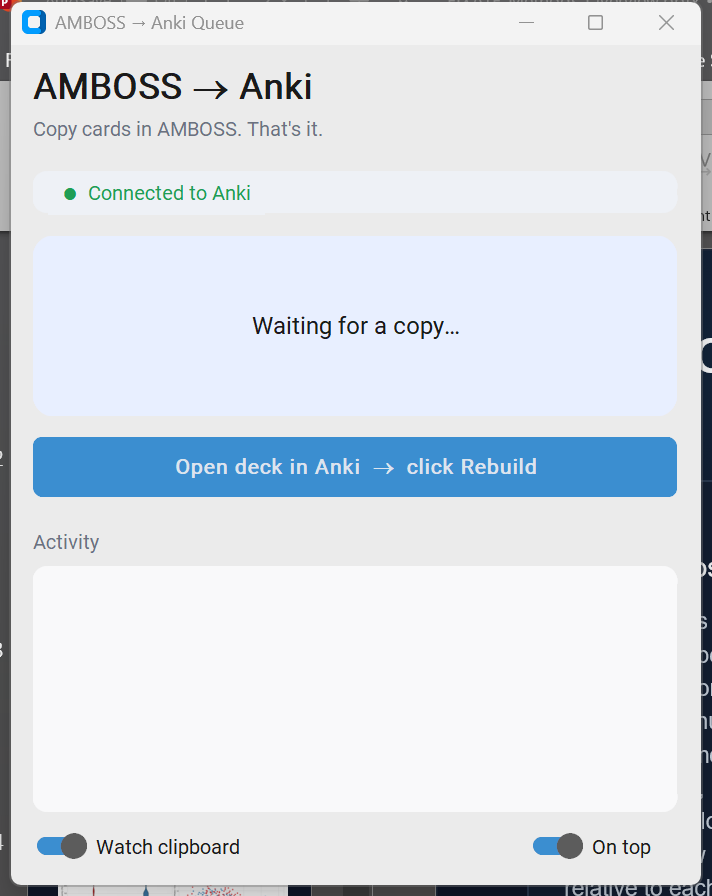

AMBOSS → Anki Queue
Copy cards in AMBOSS. They show up in Anki, scheduled. Setup takes ~5 minutes, once.
2Add AnkiConnect
Anki → Tools → Add-ons → Get Add-ons → paste2055492159 → OK → restart Anki.

3Create the deck (once)
Anki → Tools → Create Filtered DeckName:
AMBOSS Queue Search: tag:AMBOSS_queue Limit: 9999 → Build

4Download the app
Windows MacWindows: if blue "protected your PC" appears → More info → Run anyway.
Mac: unzip, right-click → Open the first time.
5Use it
Keep Anki open + the app open. In AMBOSS, copy the Anki cards for an article. The app confirms. Then click Open deck in Anki → Rebuild. Study.
Stuck? "Can't reach Anki" = Anki isn't open or AnkiConnect (step 2) isn't installed. Not affiliated with AMBOSS or Anki.